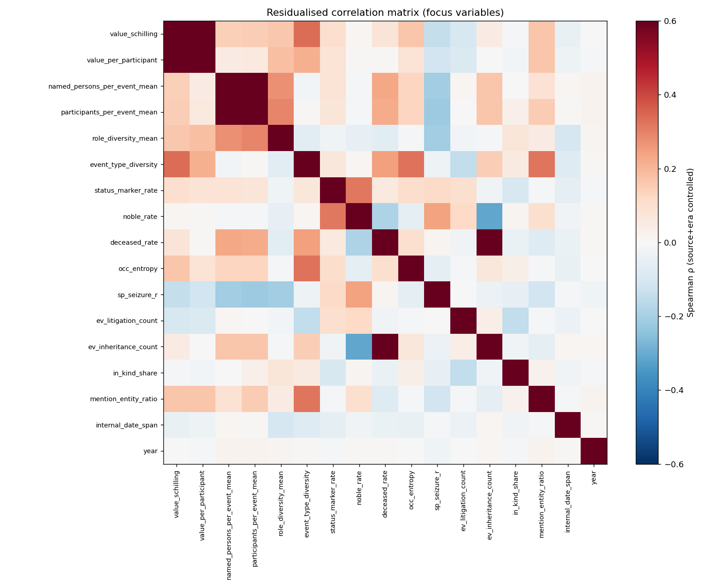
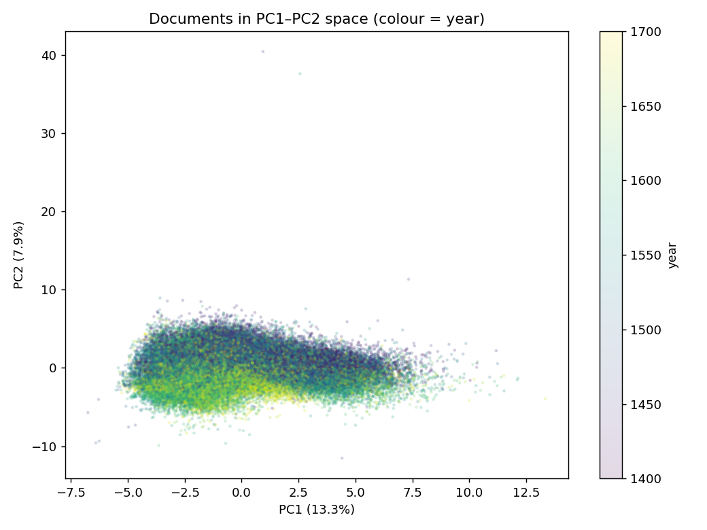
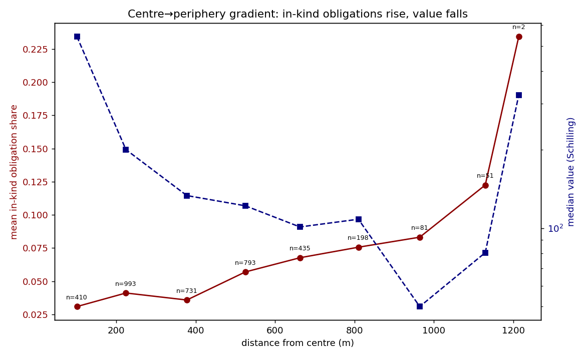

Korrelationsanalyse des HGB-Korpus
Statistische Mustererkennung über 75.447 Dokumente des Historischen Grundbuchs Basel (ca. 1400–1700) — welche Variablen treten gemeinsam auf, welche Dokumenttypen lassen sich datengetrieben unterscheiden, und wie verteilen sich Werte und Abgaben im Raum.
1. Vergleichbarmachung der Daten
Die Rohgrößen liegen in unvereinbaren Einheiten vor (neun Währungen plus Naturalabgaben; Zählwerte skalieren mit der Dokumentlänge; Archive folgen unterschiedlichen Konventionen). Fünf Transformationen stellen Vergleichbarkeit her:
- Währungsvereinheitlichung — alle Geldbeträge auf eine
Basiseinheit (Schilling) umgerechnet (
1 Pfund = 20 ß,1 ß = 12 Pfennig; Gulden/Taler näherungsweise). Naturalabgaben (Hühner, Korn, Wein …) werden separat als eigener Kanal geführt. - Längennormierung — alle Zählwerte als Rate pro 100 Tokens, damit die Dokumentlänge keine Scheinkorrelationen erzeugt.
- Skalierung —
log1pfür rechtsschiefe Größen, anschließend z-Standardisierung. - Konfidenzgewichtung — Annotationskonfidenz als Kovariate.
- Provenienz-/Epochenkontrolle — jede Variable wird auf Archiv + 25-Jahres-Bin regressiert; ausgewertet werden die Residuen. Das ist entscheidend: das Archiv allein erklärt rund 70 % der Wertvarianz.
2. Stärkste Korrelationen (Spearman, kontrolliert)
Nach Herausrechnen von Archiv und Epoche – und nach Ausschluss definitorisch gekoppelter Paare – bilden sich vier inhaltlich kohärente Bündel:
| Variable A | Variable B | ρ (resid.) | Bündel |
|---|---|---|---|
| attestation_rate | noble_rate | +0.54 | Formalität/Elite |
| attestation_rate | employment | +0.53 | Formalität/Elite |
| sp_seizure_r | noble_rate | +0.46 | Pfändung/Elite |
| currency_count | value_schilling | +0.45 | Ökon. Komplexität |
| ev_litigation_count | master_rate | +0.42 | Streit |
| collective_actor_share | ev_litigation_count | +0.40 | Streit |
| date_missing_rate | ev_litigation_count | −0.39 | Streit (gut datiert) |
| currency_count | event_type_diversity | +0.39 | Ökon. Komplexität |
| named_persons_per_event | sp_fac_r / sp_loc_r | −0.34 | Objekt vs. Person |

Interpretation der Bündel
- Formalitäts-/Elitekomplex — Geschäfte mit Adligen, formaler Anstellung oder Streit weisen mehr Beglaubigung (Zeugen/Konsens) und explizitere Finanzkonditionen (Zins/Kapital) auf.
- Ökonomische Komplexität — hochwertige Transaktionen sind mehrwährungs- und verfahrensreicher; dies ist die dominante Faktorachse (PC1).
- Streitkomplex — Konflikte involvieren Meister-Handwerker und kollektive Parteien und sind besonders sorgfältig datiert.
- Objekt-vs.-Person — beschreibungslastige (Lage/Gebäude) Passagen nennen weniger Personen.
3. Hauptkomponenten (PCA)
Eine PCA zeigt, welche Variablen sich gemeinsam bewegen. PC1 (13,3 %) ist eine Größen-/Komplexitätsachse (Ereignisse, Entitäten, Wert, Berufe laden gemeinsam), PC2 (7,9 %) kontrastiert Objektbeschreibung gegen Personenbeteiligung, PC3 (6,4 %) Geldverpflichtung gegen Personen-/Streitgehalt.

4. Datengetriebene Dokumenttypen (Cluster)
k-Means auf den PCA-Werten trennt sechs wiederkehrende Dokumentgenres — ganz
ohne das (meist leere) Feld dossiertype:
| Cluster | n | Signatur | Typ |
|---|---|---|---|
| 3 | 19.639 | Wert ≈ 2002 ß, multi-event | Hochwertige Liegenschaftsgeschäfte |
| 1 | 20.226 | due-payment, Spital, niedriger Wert | Routine-Zins-/Abgabenzahlungen |
| 4 | 17.322 | nur topological | Grenz-/Lagebeschreibungen |
| 0 | 7.887 | inheritance, deceased_rate 0.33 | Erbschaft/Testament |
| 2 | 5.777 | litigation | ownership | Streitfälle |
| 5 | 4.596 | status_marker_rate = 1, property-purchase | Elitäre Liegenschaftskäufe |
5. Ereignis-Kombinationen (PMI / Lift)
Welche Ereignistypen treten im selben Dokument überzufällig häufig — oder auffällig selten — gemeinsam auf?
| Paar (positiv) | Lift |
|---|---|
| pledge × debt | 31,9 |
| civic-affiliation × rent-purchase | 4,0 |
| rent-purchase × redemption | 3,1 |
| family × bequest | 2,9 |
| property-purchase × civic-affiliation | 2,4 |
| Paar (vermieden) | Lift |
|---|---|
| due-payment × seizure | 0,04 |
| due-obligation × litigation | 0,08 |
| due-payment × property-purchase | 0,09 |
| seizure × rent-purchase | 0,12 |
| property-purchase × litigation | 0,16 |
civic-affiliation wirkt als Knoten eines finanziell-bürgerschaftlichen
Komplexes; Routine-Zahlungsakten enthalten dagegen fast nie zugleich
Vollstreckung. In 25-Jahres-Bins ausgewertet verstärken sich
pledge × debt und civic-affiliation × rent-purchase
deutlich nach ~1525–1550.
6. Räumliche Analyse: Zentrum / Peripherie
Für die 3.694 georeferenzierten Dossiers zeigt sich ein klares monozentrisches Gefälle. Mit zunehmender Distanz vom Stadtkern sinkt der Geldwert (Spearman ρ = −0,155, p ≈ 9·10⁻²⁰) und steigt der Naturalabgaben-Anteil (ρ = +0,107, p ≈ 3·10⁻¹⁰).
| Kern (≤150 m) | Peripherie (~1 km) | |
|---|---|---|
| Median-Wert | 543 ß | ~50–130 ß |
| Naturalabgaben-Anteil | 3 % | 12 % |

7. Daten & Reproduzierbarkeit
Die gesamte Pipeline ist skriptbasiert und reproduzierbar:
extract_features.py— streamt das Quell-XML und erzeugt die Dokument-Merkmalsmatrixfeatures_doc.parquet(75.447 × 153), inkl. Teilnehmerstruktur, Zeit-, Ereigniskombinations-, Status- und Verhältnis-Spalten (25-Jahres-Bins).analyze_features.py— Korrelations-, PCA-, Cluster-, PMI- und Moran's-I-Analyse →analysis_report.md+ Abbildungen.centre_periphery.py— Raumanalyse →centre_periphery.csvund Abbildungen, gespeist aus den WGS84-Koordinaten indossiers_geo.json.
value_schilling beruht auf
näherungsweisen Gulden-/Taler-Kursen (editierbar in
extract_features.py); die Richtung der Wertbefunde ist robust,
exakte Beträge ändern sich mit den Kursen. (2) Die Zeugenrolle ist im Korpus sehr
selten (29 Belege); aussagekräftiger ist das breitere Maß
attestation_rate. (3) Die Raumanalyse umfasst nur die ~3,7 k Dossiers
mit Koordinaten. (4) 5 PCA-Komponenten erfassen 37 % der Varianz — erwartbar für
dünn besetzte, kategorial abgeleitete Daten.